HARDWARE

Em um computador ou qualquer outro dispositivo composto por circuitos elétricos,
o hardware é o conjunto dos componentes físicos internos e dos periféricos externos
Em Ciência da Computação, entende-se como hardware interno componentes como processador, placa-mãe, memória RAM, placa de vídeo,
coolers e ventoinhas, cabos internos, fonte, HD, SSD, unidades ópticas (drives de CD/DVD/Blu-ray), etc.
| 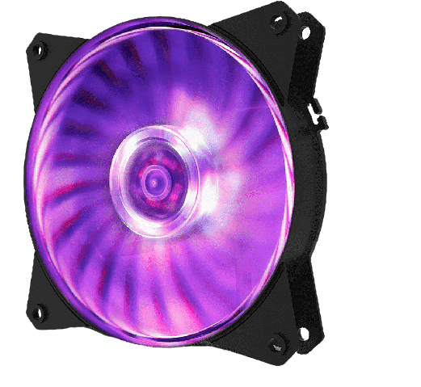 |
Coolers controlam temperatura e previnem que componetes sejam danificados pelo calor. Coolers são essenciais para que computadores funcionem corretamente e para que seus componentes tenham vida útil prolongada. |
| Um disco rígido de computador é um tipo de tecnologia que armazena o sistema operacional, os aplicativos e os arquivos de dados que o computador usa nas suas funções. |
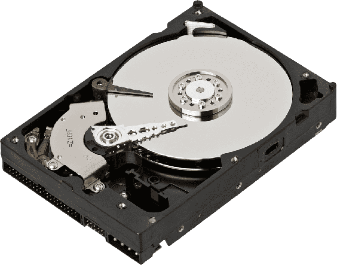 |
| 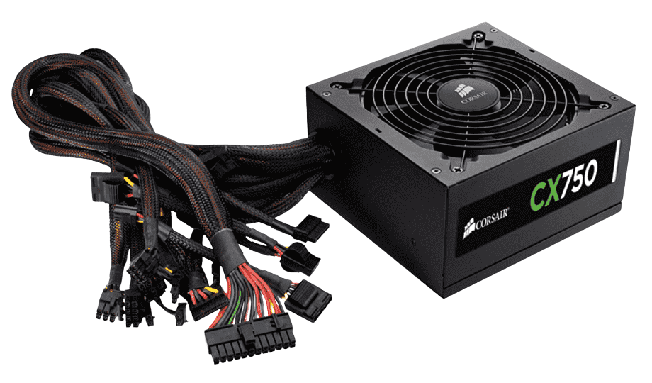 |
Fonte de alimentação é utilizada para fornecer energia à carga elétrica. Portanto, é um dispositivo elétrico que fornece energia ao circuito. Normalmente, a fonte da eletricidade é uma bateria, gerador ou tomada. Existem diversos tipos de fontes de alimentação e cada uma com sua função específica. |
| Esse componente é responsável por dar mais agilidade e velocidade no funcionamento geral do sistema. Sem a memória RAM, tarefas como abrir programas e editar arquivos demorariam muito para serem realizadas. |
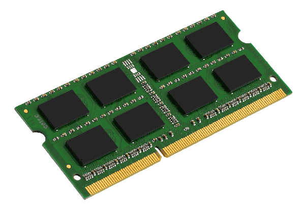 |
| 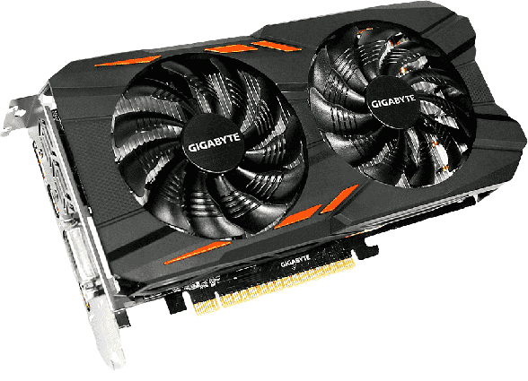 |
Placa de vídeo, também chamada placa gráfica ou aceleradora gráfica, é uma placa de expansão que gera uma saída de alimentação de imagens para um dispositivo de exibição. É responsável por gerar e renderizar gráficos tanto 2D quanto 3D. |
| A placa de som é a peça/componente responsável por fazer a conversão dos sinais sonoros digitais gerados pelo computador em áudio analógico para ser reproduzido por caixas de som ou fones de ouvido. |
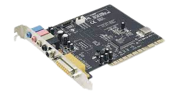 |
| 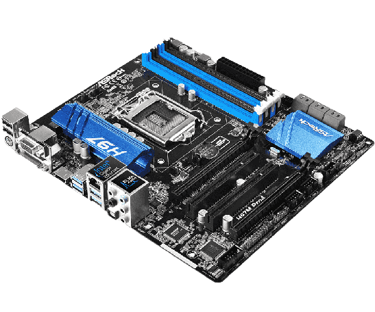 |
Placa mãe é uma peça central responsável por conectar e interligar todos os componentes (processador com memória RAM, disco rígido, placa gráfica). A placa une todas as partes do sistema numa só rede de fios, porque dispõe de caminhos que permitem a troca de informação entre processadores, memórias, placas e etc. |
| Um processador é uma espécie de microchip especializado. A sua função é acelerar, endereçar, resolver ou preparar dados, dependendo da aplicação. Basicamente, um processador é uma poderosa máquina de calcular. |
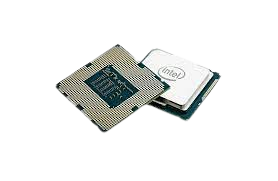 |
| 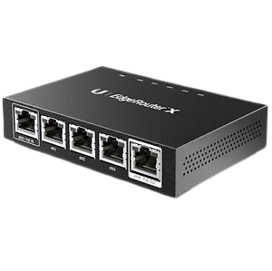 |
Wired é uma rede de computadores que utiliza de fios e cabos para se conectar e compartilhar dados, software, etc, com outros computadores. Apesar de suas diferenças, tanto a rede cabeada quanto a wireless oferecem vantagens interessantes aos usuários. |
| Esse tipo de rede, também é conhecida como WiFi, usa um modem ou roteador conectado diretamente ao sinal da operadora por meio de um cabo, seja de cobre ou fibra óptica. A partir daí, o roteador retransmite o sinal para os dispositivos conectados através de ondas de rádio. |
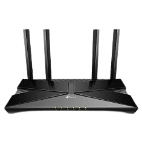 |
| 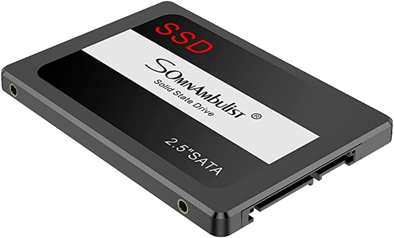 |
Um SSD é um meio de armazenamento que, diferente do HDD, usa memória (flash) não volátil para manter e acessar dados. Em outras palavras, não há partes de movimento mecânico. |
| Switch KVM ou Chaveador KVM é um dispositivo de hardware que permite ao usuário controlar vários computadores usando somente um teclado, monitor e mouse. Embora vários computadores estejam ligados ao KVM, realmente um número menor pode ser controlados a qualquer momento. |
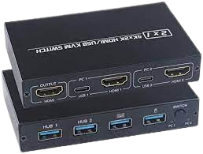 |